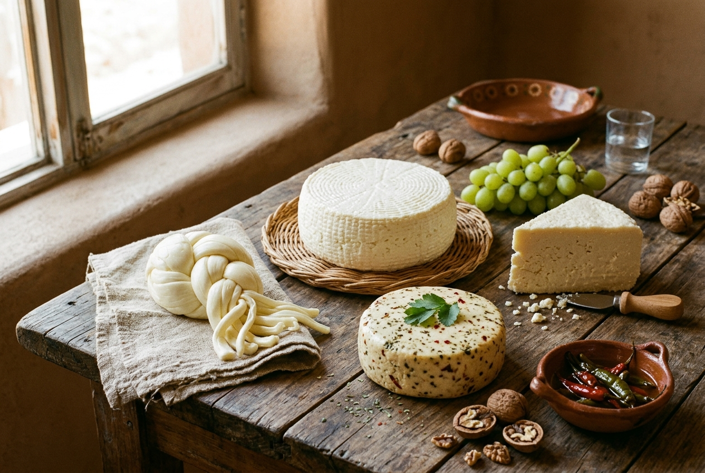

Hecho en casa
Cada queso se prepara a mano, en tandas pequeñas. No es queso de fábrica: es el queso de la familia.
En Lácteos San Manuel hacemos quesos frescos todos los días, con leche de la región y recetas de familia. Sin conservadores y sin prisas.
Ver productos Hacer un pedido
Lácteos San Manuel nació en una cocina, con una olla grande y muchas ganas. Hoy seguimos igual: hacemos queso Oaxaca, panela, ranchero, botanero, manchego, doble crema, asadero y provolone en tandas pequeñas, para que llegue fresco a tu mesa.
También preparamos nata, crema, mantequilla, requesón, tamales de requesón y dulces de leche. Todo se vende por pedido, así que compras del día.
Entregamos en Tula, Cruz Azul, San Marcos, El Llano e Iturbe.
Tres razones sencillas para elegirnos
Cada queso se prepara a mano, en tandas pequeñas. No es queso de fábrica: es el queso de la familia.
Llevamos tu pedido a tu casa en Tula, Cruz Azul, San Marcos, El Llano e Iturbe.
Vendemos directo del productor al cliente. Sin intermediarios y sin cobros extra.
Revisa los días de entrega de tu zona y pide con 24 horas de anticipación.
Ver días de entregaElige tu producto, la cantidad y tu zona. La página te calcula el total automáticamente y nosotros pasamos por él.
Pedir ahora